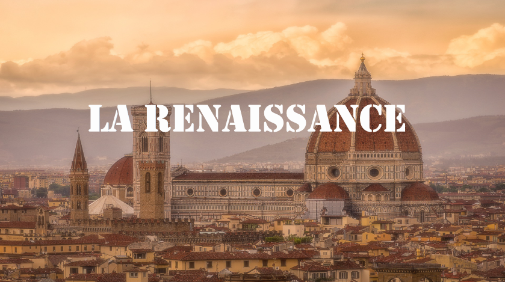
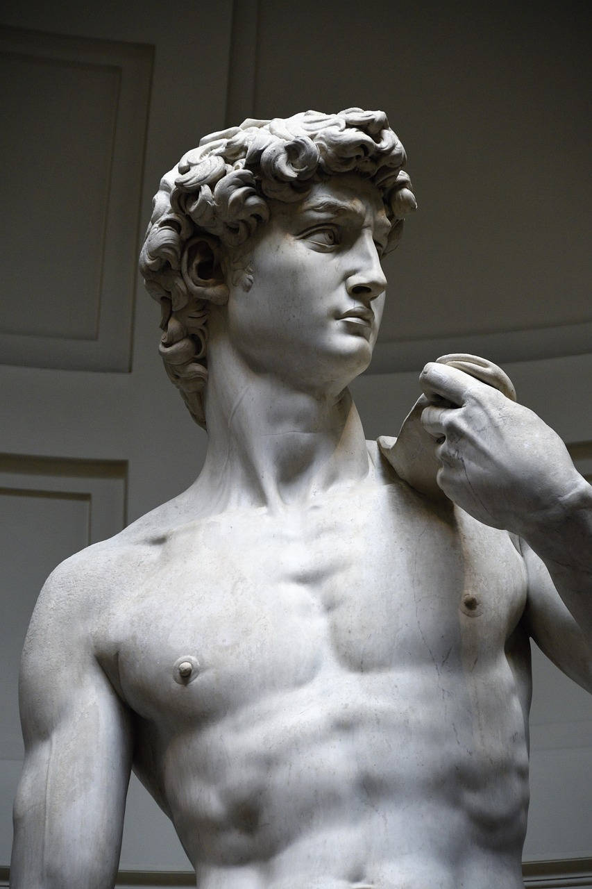
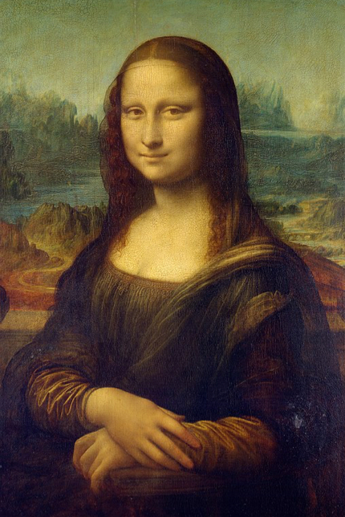
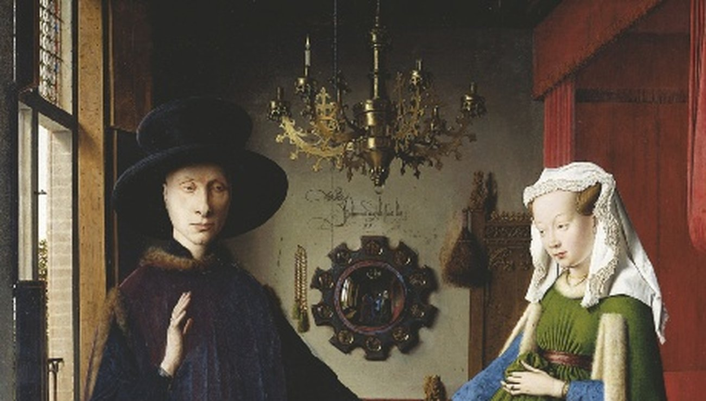

Léonard de Vinci
Peintre, inventeur, scientifique. Auteur de la Joconde.

Redécouvre une époque de lumière, d’art et de savoir, où l’être humain et la beauté sont au centre du monde.

La Renaissance est une période de renouveau artistique, scientifique et culturel, qui commence en Italie au XIVe siècle et se diffuse dans toute l’Europe.



Peintre, inventeur, scientifique. Auteur de la Joconde.
Sculpteur et peintre, auteur du David et de la chapelle Sixtine.
Maître de l’harmonie et de la douceur.